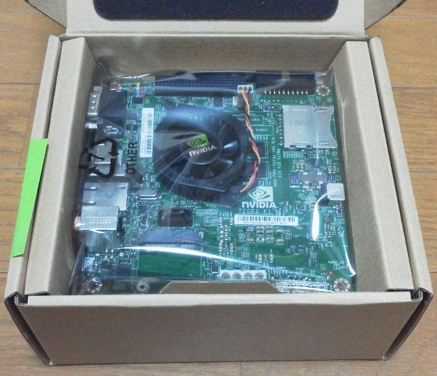

Getting Started with Jetson TK1

First time login and make sure your Jetson don't have failure:
Using Jetson TK1 like PC
or
Remote connection
or
Serial console
then
Preparing System:
In following pages, I assume The Grinch Custom Kernel works for most people.
Updating system using internet
or
Install OS in external storage(SD card, USB Flash/HDD/SSD or SATA HDD/SSD)(Not tested)
or
Prepairng without internet and updating
Jetson TK1 related links
Jetson TK1 support
Linux For Tegra R21
Linux For Tegra R19
Official Wiki
Official Jetson TK1 Blog
Embedded Tegra & Jetson TK1 forum
Android on Jetson
(Forum topic,
Demo video on Youtube
)
Jetson TK1 "The Grinch" Custom Kernel
Build own kernel for Jetson TK1
Display Port/Expansion on Jetson TK1(Work in progress)
Home